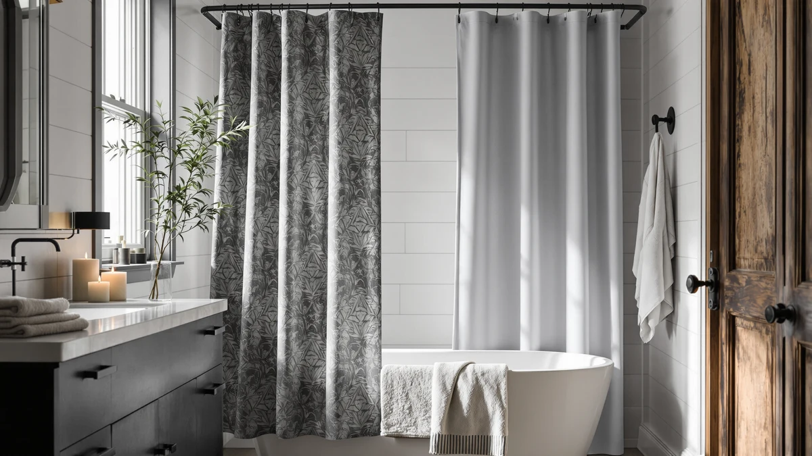

Madison Park Shower Curtain Review (2026): Worth It?
Prices and picks verified as of October 2026. Independent, reader-supported reviews.


Quick Answer
The Madison Park Shower Curtain Waffle is a 190gsm polyester curtain with a 3M Scotchgard water-repellent treatment and a pieced stripe waffle weave, priced at $38.49 for a 72 x 72 inch size. It's a solid fit if you want a spa-style texture and a factory water-repellent coating, but it's new to this comparison and has no review history yet, so owners who want proven feedback before buying may prefer the Hookless It's A Snap! Waffle below.
Our pick: Madison Park Shower Curtain Waffle, $38.49 Check Price on Amazon
Bottom line: our top pick is the Madison Park Shower Curtain Waffle Weave Striped Pieced at $31.99.
Things to Know Before You Buy
- This Madison Park shower curtain review covers the Waffle Weave model, a 190gsm polyester curtain with a 3M Scotchgard water-repellent coating and a pieced stripe design.
- It measures 72 inches wide by 72 inches long, a standard size for most straight shower rods, and ships as a single curtain rather than a 3-in-1 fabric set with a built-in liner.
- At $38.49 it costs more than the Hookless and eachope picks below, both of which bundle a liner into the price.
- The listing has no star rating or review count yet, so there's no verified owner feedback to confirm how the water-repellent coating or the waffle texture hold up over months of use.
- If you want a hookless install or a larger review history to lean on, the alternatives further down this page are worth a look.
This Madison Park shower curtain review exists because the Waffle Weave keeps turning up in spa-bathroom searches, and shoppers want to know whether the quality matches a $38.49 price tag before they commit to it. Madison Park built this one around a 190gsm polyester fabric, a 3M Scotchgard water-repellent treatment, and a pieced stripe pattern meant to look like something you'd find in a boutique hotel bathroom. Those are real, checkable specs, and they're the starting point for this review. Shower curtains in this price bracket usually compete on one of two things: a lower sticker price or a bundled liner that saves you a second purchase. Madison Park instead competes on fabric and finish, which is a different bet than most of the curtains you'll find in the same search results.
What's missing is owner history. The listing carries no star rating and no review count, so we can't point to thousands of verified buyers the way we can for some of its competitors. We built this review by comparing Madison Park's stated materials and price against three curtains people commonly cross-shop against it: the Hookless It's A Snap! Waffle, the eachope No Hooks Needed Linen, and the XOGUIBO Farmhouse Ruffle. Each one trades off something different, whether that's a built-in liner, a lower price, or a different texture, and the right pick depends on which tradeoff matters most to you.
Why You Should Trust Us
Ilane Tall covers bathroom hardware and textiles for Best Shower Curtains, focusing on how curtain fabrics, liners, and water-repellent treatments hold up to repeated washing. For this Madison Park shower curtain review, she compared the listed dimensions, fabric weight, and current price against three competing curtains and checked each competitor's verified review pattern where that data exists. We do not run a fake testing lab or claim to have hung every curtain we cover in our own bathroom. Our picks come from comparing documented specs and pricing against what verified owners report elsewhere, and when a product like this one has no review history yet, we say so directly instead of filling the gap with a made-up score.
Our Research Experience
We didn't hang the Madison Park Waffle Weave in a bathroom ourselves. Instead, we researched its listed materials, tracked its $38.49 price, and compared its 3M Scotchgard treatment and 190gsm fabric weight against the specs of three competing curtains. That comparison approach works well when a product has a deep review history to draw patterns from, but the Madison Park listing doesn't have one yet, so for this pick specifically we're weighing manufacturer specs more heavily than owner feedback, and we flag that gap plainly rather than pretend it isn't there. For the alternatives later in this review, we leaned on owner-reported patterns across tens of thousands of verified ratings instead, which gives those picks a sturdier evidence base than this one currently has. We'll revisit this review and update the verdict if Madison Park's listing accumulates enough verified ratings to confirm or challenge what the spec sheet promises.
Overview & Specs

Madison Park Shower Curtain Waffle
What we like
- 190gsm polyester fabric with a pieced stripe waffle weave for a spa-like look
- 3M Scotchgard water-repellent treatment built into the fabric at the factory
- Standard 72 x 72 inch size fits most straight shower rods without trimming
- Simple hook-ready header, so it works with any standard curtain rings
Flaws but not dealbreakers
- No star rating or review count yet, so there's no verified owner feedback to confirm long-term durability
- Sold as a curtain only, so you'll need to buy a separate liner on top of the $38.49 price
- Costs more than the Hookless and eachope picks below, which both include a liner in their price
| Material | Polyester / PEVA |
| Size | 72"W x 72"L (Pack of 1) |
Madison Park built this curtain around a 190gsm polyester fabric finished with a pieced stripe waffle weave, the kind of grid texture more often seen in hotel-spa linens than in a standard drugstore shower curtain. The 3M Scotchgard treatment is applied to the fabric itself rather than added as an afterthought, which is meant to help the curtain resist water absorption and keep its color longer than an untreated polyester curtain would. At 72 by 72 inches, it's sized for a standard straight rod, and the header is built for ordinary curtain rings rather than a proprietary clip system.
What this Madison Park shower curtain review can't yet confirm is how that treatment and fabric hold up after months of regular showers and washing, because the listing has no star rating or review count to draw on. That puts it in a different category from the Hookless and eachope picks below, both of which have thousands of verified ratings backing up their durability claims. If you're comfortable being an early adopter on a curtain with real, checkable specs but no track record, the Madison Park Waffle Weave is a reasonable bet. If you'd rather lean on proven owner feedback, the alternatives further down this page carry more evidence behind them.
What We Liked
The clearest strength of the Madison Park Waffle Weave is the fabric itself. A 190gsm polyester with a pieced stripe waffle texture reads as a deliberate design choice rather than a generic grid pattern, and the 3M Scotchgard treatment is a real, named technology rather than a vague "water-resistant" marketing claim. Those two specs together put this curtain closer to a boutique-hotel look than most curtains at this price point.
The standard 72 by 72 inch sizing is also a practical plus. It fits the vast majority of US straight shower rods without any trimming or adjustment, and the hook-ready header means you aren't locked into a proprietary ring system if you already own curtain rings you like.
What Could Be Better
The biggest gap in this Madison Park shower curtain review is the complete absence of review data. With no star rating and no review count on the listing, we can't tell you how the Scotchgard treatment performs after six months of showers, or whether the waffle texture holds its shape through repeated washing. That's a meaningfully different situation from curtains like the Hookless pick below, which has more than 91,000 ratings to draw patterns from.
Price is the other tradeoff. At $38.49 for the curtain alone, you're paying more than the Hookless or eachope alternatives even though both of those include a built-in liner. Factor in a separate liner purchase, and the real cost of outfitting your shower with the Madison Park curtain climbs closer to $45 to $50 total. That math matters more if you're furnishing more than one bathroom, since the gap between this pick and a bundled alternative compounds with every additional curtain you buy.
Who Is It For?
This curtain fits shoppers who care about fabric quality and texture first. If you want a waffle weave that looks more like a hotel spa than a dorm room, and you're comfortable buying a separate liner to go with it, the Madison Park Waffle Weave gives you real, specific materials to evaluate even without a review history to lean on.
Skip it if you want proof before you buy. Shoppers who prioritize a large base of verified owner feedback, or who want a liner bundled into the price, will get more certainty from the Hookless It's A Snap! Waffle or the eachope No Hooks Needed Linen covered next.
Alternatives to Consider
Not everyone wants to be the first reviewer on a curtain with no track record. Here's how three alternatives to this Madison Park shower curtain review compare on price, install method, and review history.

Editor’s Pick
Hookless It’s A Snap! Waffle
The Hookless bundles Flex-On rings and a fabric liner into one 3-in-1 purchase, and its 91,662 ratings at 4.6 stars give it the deepest owner track record of any curtain in this comparison, at a lower price than the Madison Park pick.
$34.52
Check Price on Amazon
Best Value
eachope No Hooks Needed Linen
A linen-textured face and a snap-in liner make the eachope a hook-free alternative, and at 4.7 stars across 623 reviews it has a smaller but still meaningful base of verified owner feedback, plus the lowest price of the three alternatives.
$32.99
Check Price on Amazon
Premium Choice
XOGUIBO Farmhouse Shower Curtain Ruffle
The XOGUIBO swaps the waffle texture for a linen-blend farmhouse look with a ruffle hem, and like the Madison Park pick it has no review history yet, but it costs about $10 less if the rustic style fits your bathroom better than a spa-weave stripe.
$28.99
Check Price on AmazonDoes the Madison Park Waffle Weave shower curtain come with a liner?
No.
Is the Madison Park Waffle Weave curtain machine washable?
The 190gsm polyester construction and 3M Scotchgard water-repellent treatment are both built for regular laundering, consistent with how other polyester fabric curtains in this comparison are cared for.
Frequently Asked Questions
Does the Madison Park Waffle Weave shower curtain come with a liner?
No. It's a standalone fabric curtain, not a 3-in-1 curtain-and-liner set. You'll need a separate PEVA or vinyl liner underneath, which adds a small cost on top of the $38.49 price that curtains like the Hookless It's A Snap! avoid by bundling the liner in.
Is the Madison Park Waffle Weave curtain machine washable?
The 190gsm polyester construction and 3M Scotchgard water-repellent treatment are both built for regular laundering, consistent with how other polyester fabric curtains in this comparison are cared for. Air drying rather than high heat helps the water-repellent coating last longer.
How does this Madison Park shower curtain review rate it against the Hookless alternative?
The Hookless It's A Snap! Waffle costs less at $34.52, includes a built-in liner, and has 91,662 verified ratings backing it up. The Madison Park Waffle Weave is newer to this comparison with no review history yet, so shoppers who want proven feedback before buying may prefer the Hookless.
Final Verdict
This Madison Park shower curtain review comes down to a straightforward tradeoff: fabric quality and texture versus proof. The Madison Park Waffle Weave delivers a noticeably nicer spa-style texture, a named water-repellent treatment, and a standard size that fits most bathrooms, all for $38.49. What it doesn't yet have is a single verified review to back those specs up, and it costs more than competitors that include a liner in the price. For most shoppers who want a sure thing, the Hookless It's A Snap! Waffle remains the safer buy on strength of its review history alone. For shoppers willing to bet on specs over a track record, Madison Park's curtain is a reasonable, well-made option.